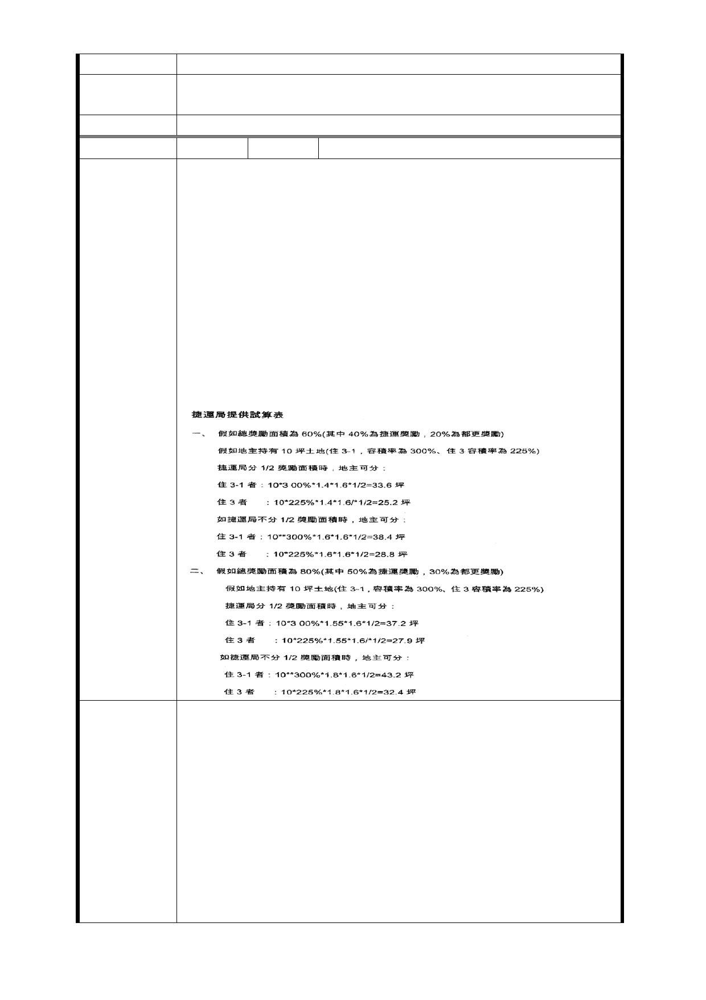

邊的交通事故之預防應有更大的助益。
市府回應
意見
同編號捷五－1 回應意見。
委員會決議 同編號交一－1 委員會決議。
編 號 捷五-46 陳情人 謝○玉
一、本基地為五樓公寓（萬大華園），郝市長承諾市民以室內
一坪換一坪，並多一個汽車停車位之方式，獎勵辦理都市更
新。為配台政府公共政策，開闢捷運出口，因政府再與地主
共享獎勵面積，造成本基地地主分到之面積，比單純都市更
新更少。因此，建議應提高獎勵容積，且市政府不應分配獎
勵面積。以解決地主分坪不足的問題，讓其可分回原居住面
積（捷運局提供試算表如附件）。
二、因地主知道規劃更新之重要，如由捷運局完全主導開發
，則地主無法參與，也就無從清楚知道分得坪數，價值等相
關細節，會使其疑慮多，且降低參與聯開意願。如由地主共
同委託實施或自組更新會，住戶可全程參與，則開發阻力將
會較小。
陳情理由
一、變更為商業區，提高法定容積率為 360 ％。
二、捷運獎勵、都市計劃獎勵提高至法定容積之兩倍，基地
總開發容積以不超過開發基地原法定容積之三倍為上限。基
地總開發容積包含捷運獎勵容積、都市計劃獎勵容積、都市
更新獎勵容積及都市計劃容積移轉等。
建 議 辦 法 三、捷運獎勵及都市計劃獎勵面積應全部歸地主，市政府不
應與地主平分 1/2。
四、依大眾捷運土開辦法，應特例允許本基地內，除國有及
市有地外，如基地內私地主有 2/3 以上地主共同委託都市更
新實施者時，捷運局應優先採用地主委託之實施者為投資人
。
- 85 -